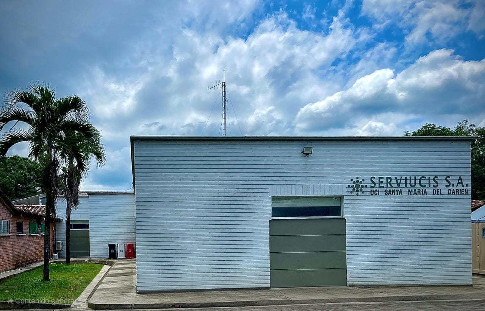

Nuestras Sedes
Sede Rionegro
UCI Valle de San Nicolás
El oriente Antioqueño está compuesto por 26 Municipios, siendo Rionegro el polo de desarrollo de esta región. SERVIUCIS entra a ser un importante centro de referencia de la zona para pacientes que requieren atención en cuidado crítico.
Dirección: Carrera 55A # 35-229 Interior 130


Sede Apartadó
UCI Santa María del Darién
Esta región, una de las de mayor expectativa en el desarrollo económico del país, pudo contar con una moderna Unidad de Cuidado Intensivo cuando llegó SERVIUCIS en 2007, mejorando la accesibilidad a servicios de alta complejidad.
Dirección: Cra. 98 #106-28, Apartadó, Antioquia